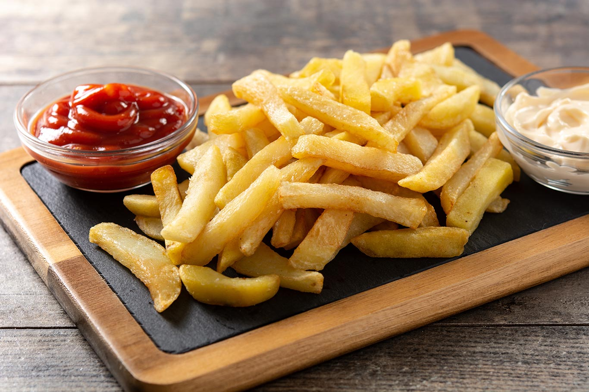
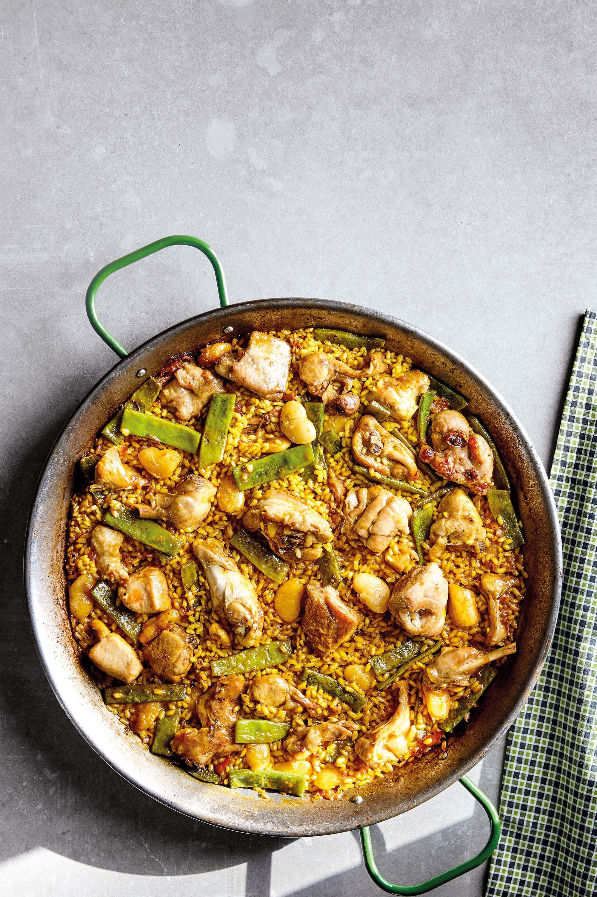

RECETAS


Patatas fritas
Receta de patatas fritas
Ingredientes
- 3 ó 4 patatas (300g.)
- 4 dientes de ajo.
- Aceite de oliva.
- Sal.
Elaboración (Pasos)
- Calentar aceites en una sartén.
- Añadir las patatas cortadas, sal y los ajos.
- Freis al gusto.
- Servir en plato.
Volver
Paella
Receta de Pella de carne
Ingredientes
- 300 gr. de arroz bomba
- 4 muslos de pollo
- 400 gr. de costilla de cerdo
- 1 pimiento verde
- 1/2 pimiento rojo
- 2 dientes de ajo
- 1/2 vaso de vino blanco
- 1,5 l de agua
- aceite de oliva virgen extra
- sal
- pimienta
Elaboración (Pasos)
- Trocea las costillas y salpimiéntar. Salpimienta también los muslos.
- Dorar toda la carne en una tartera con un chorrito de aceite.
- Retira la carne y resérvala.
- Vierte el vino a la cazuela para desglasarla y resérvalo.
- Pica las verduras en daditos y pon a pochar en una cazuela con un chorro de aceite.
- Cuando se doren, agrega la carne y el vino.
- Dale un hervor y cubre con agua. Cocina durante 30 minutos a fuego no muy fuerte.
- Rehoga el arroz junto con el azafrán en una paella con un chorrito de aceite.
- Vierte el triple de caldo de cocción que de arroz y el guiso de verduras y carne.
- Deja cocinar durante 18-20 minutos.
Volver